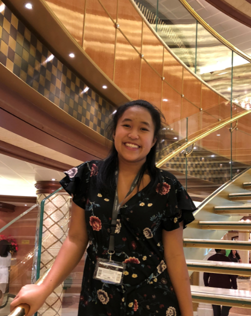

- Personal Background : Grew up in Charlotte, NC. I am the second eldest in my family of seven.
- Professional: I've been and are working at my parent's family business currently. I am a Sushi chef as well as a food prepper.
- Academic: I have gotten my Highschool degree at Myers Park High School and graduated in the year 2020. I dual-enrolled at CPCC at the time and took 60-ish credits at the institution. I then came to UNCC as a sophomore with the credits transferred.
- Background on this Course: I have ZERO background. I am lost but with more practice, I'm sure I'll get the hang of it
- Primary Computer Platform: I am currently using Dell
- Current Classes for this Semster:
- ITCS 3160 - Database Design and Implementation. Actually, very excited for this class. It's required but it will be useful for my degree.
- ITIS -3135 Web-Based Application Design and Development**I want to learn more about HTML .
- LBST-2301 Critical Thinking and Comm - This is a class that is required.
- JAPN-1202- Elementary Japanese II- I want to continue learning Japanese since I plan to minor in japanese.
- Funny/Interesting Story: When I was younger, I enjoyed a Japanese game so much that I created a Japanese Apple Id to get the Japanese version of the game. Creating an Apple Id required me to input a Japanese address and since I didn't have one, I picked a random house on google. I still use this apple id to this day and I wonder if that random house recieves mail regarding what I have purchased on the App Store.
- Something Else to Share: Nothing Else to share, other than the fact that I look forward to learning more about CSS and HTML